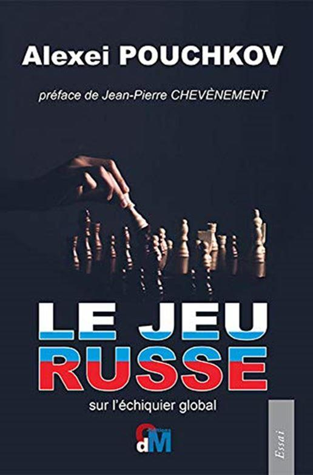
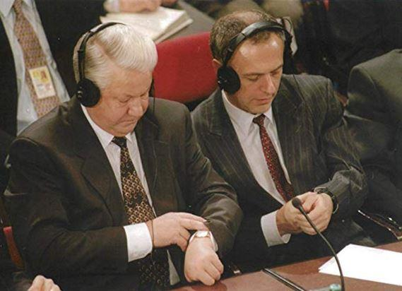

Recension de « Le jeu russe » sur l’échiquier global
par Jacques SAPIR
Le livre qu’Alexeï Pouchkov vient de publier sur la stratégie russe et les relations internationales [1] sous le titre Le Jeu Russe sur l’échiquier global mérite naturellement que l’on s’y arrête. Jean-Pierre Chevènement en a rédigé la préface ; c’est dire qu’il s’agit donc d’un livre important et qui mérite discussion. Dans ce livre, l’auteur dresse un bilan de près de trente ans de relations internationales de l’Union soviétique puis de la Russie. Il analyse la disparition puis la résurrection de l’idée d’intérêts nationaux dans la diplomatie russe, balayant ainsi une période qui va de Gorbatchev à Eltsine et de Eltsine à Poutine.
Alexeï Pouchkov n’est pas n’importe qui. Jeune diplômé du MGIMO, l’Institut des Relations Internationales de Moscou, il commença sa carrière par un poste à la délégation soviétique aux Nations Unies à Genève. En 1988 il intégra l’équipe de Mikhail Gorbatchev pour qui il travailla comme l’une de ses plumes, écrivant ses discours. Il devient un journaliste de talent, et à succès, en 1991, restant spécialisé sur les relations internationales. En 1998 il devint le directeur de l’émission Postscriptum sur la chaîne de télévision TVCentre. Tout en conservant son émission, il revint à la politique en se faisant élire à la Douma en 2011 sur la liste du parti présidentiel Russie Unie.
Il occupa alors de 2011 à 2016 la présidence de la commission aux affaires étrangères de la Douma, un poste véritablement stratégique. Il devint en septembre 2016 le sénateur de la région de Perm. Journaliste brillant, intervieweur subtil doté d’un remarquable esprit analytique, personnalité politique en vue du milieu francophile maîtrisant remarquablement notre langue, il est un des meilleurs connaisseurs de la politique internationale à Moscou.
Son ouvrage balaye en 12 chapitres le chemin parcouru par la place internationale de la Russie, commençant avec l’Union soviétique de la Pérestroïka, explicitant le basculement qui vit la Russie perdre son statut de « puissance » et passer à celui de pays dominé, interrogeant ce qu’il pouvait y avoir de « servitude volontaire » dans la politique de Boris Eltsine et de son ministre des affaires étrangères Andreï Kozyrev. Il poursuit en analysant les circonstances qui ont vu Evgueny Primakov succéder à Kozyrev, s’attardant au conflit entre l’OTAN et la Yougoslavie de 1999 en qui il voit une rupture, puis analysant les débuts de la période marquée par Vladimir Poutine, et en particulier ses tentatives de rapprochement avec les pays occidentaux.
Puis, il décrit comment l’échec de ce rapprochement conduisit Vladimir Poutine à prononcer le « discours de Munich » qu’il considère, à très juste titre, comme le point marquant d’une nouvelle période [3]. Il développe alors son analyse des événements qui suivirent, le conflit avec la Géorgie à la suite de l’agression militaire de cette dernière contre l’Ossétie du sud, le déclin de l’hégémonie américaine, l’échec de la tentative de relance des relation américano-soviétique (le « reset ») et le basculement dans des relations de plus en plus conflictuelles, conduisant alors les Etats-Unis à tenter une nouvelle forme de la politique « d’endiguement », en particulier dans le cadre de la crise ukrainienne. Il conclut son livre par une interrogation sur ce qu’il appelle les « vieux dogmes de l’Occident » et leur inadéquation dans un monde où de nouveaux centres de pouvoirs émergent.
La thèse du livre d’Alexeï Pouchkov
La thèse centrale du livre d’Alexeï Pouchkov est simple : la Russie, déséquilibrée par une politique incompétente menée par Mikhail Gorbatchev, s’est placée dans une position de soumission vis-à-vis des Etats-Unis, dans l’espoir que ces derniers tiendraient leur promesse de la considérer comme un partenaire égal. Devant la mauvaise volonté, voire le double jeu, des Etats-Unis Boris Eltsine, en nommant Primakov comme Ministre des Affaires Étrangères a commencé à réaliser que les intérêts vitaux de la Russie étaient eux-mêmes attaqués. L’attitude des Etats-Unis, a – par la suite – conduit Vladimir Poutine, qui lui-même a cherché à améliorer les relations Russo-Américaine, à exprimer ce qu’il considérait comme ces intérêts vitaux lors de la conférence sur la sécurité à Munich en 2007. Considérant que les Etats-Unis ne changeaient pas de position, il a pris des mesures de sauvegarde, qui ont été considérée comme agressive alors qu’elle ne faisait que traduire dans les actes le contenu de son discours. Les relations avec les pays Occidentaux et les Etats-Unis se sont, progressivement, radicalement dégradées. Le fait que les Etats-Unis connaissaient à cette époque une crise globale de leur hégémonie explique aussi largement leur politique agressive et la détérioration des relations Russo-Américaines.
Il y a incontestablement du vrai dans cette analyse, dont on peut parfaitement partager les constats. Personnellement, on ne les contestera pas. Mais, son caractère très général peut, aussi, être trompeur. N’y a-t-il pas une forme de reconstruction « ex-post » dans cette linéarité des évolutions qui se déroule de pages en pages du livre ? De même, si Alexeï Pouchkov montre, à plusieurs reprises, les conflits qui existaient en Russie au sujet de la politique étrangère ne néglige-t-il pas l’existence de conflits identiques aux Etats-Unis et dans certains pays européens ? Il évoque ainsi le débat qui exista en 1999-2000 aux Etats-Unis sur le thème « qui a perdu la Russie » (« Who lost Russia »). Mais il s’agit ici d’un débat public, et qui plus est d’un débat « post-factum ». Or, me trouvant très souvent aux Etats-Unis de 1990 à 2001, participant à des séminaires où intervenaient tant des représentants du Département d’État que du Pentagone ou de la CIA, interviewant à plusieurs reprises des responsables du FMI et du Département au Trésor, j’ai été le témoin des débats féroces qui ont pu exister au sujet de la politique à adopter quant à la Russie. Ainsi, de 1991 à la fin de 1992, avant et après la dissolution de l’URSS et l’indépendance de l’Ukraine, j’ai été témoin de l’opposition frontale qui pouvait exister entre les analystes militaires, les responsables de la CIA, qui étaient opposés à l’indépendance de l’Ukraine et les responsables du Département d’État. L’opposition à l’indépendance de l’Ukraine, et par ricochet le soutien à toute autorité forte capable de s’exprimer à Moscou, provenait essentiellement de la crainte que l’Ukraine ne puisse récupérer les armes nucléaires soviétiques présentes sur son territoire.
Le problème était d’autant plus sérieux que les soviétiques avait échangé des informations avec les Américains et que ces derniers savaient que les bombes susceptibles d’être emportées par les bombardiers stationnés en Ukraine (Tu-22 et Tu-26) possédaient un système de sécurité beaucoup moins résistant et fiable que celui des armes nucléaires embarquées à bord des missiles.
Tupolev Tu-22M-3, Ukraine
De même, je fus témoin de la réticence du FMI à s’engager en Russie, de 1991 à 1992, réticence dont me fit part M. Camdessus lui-même, et qui s’expliquait par la conscience de certains des directeurs que le FMI ne saurait pas gérer une situation de « transition ». C’est le Département d’État et le Département au Trésor des Etats-Unis qui financèrent les premières interventions et qui finir par contraindre le FMI à s’engager. Au sein du Département au Trésor, la hiérarchie normale avait d’ailleurs été court-circuité par quatre hommes qui surent jouer de leur influence et de leurs réseaux pour obtenir ce qu’ils voulaient, Richard Layard (un des conseillers de Tony Blair et du New Labour) ou Lawrence Summers (économiste en chef à la Banque Mondiale, puis Sous-Secrétaire d’État au Trésor), l’économistes Jeffrey Sachs (proche de Layard et de Summers) et un économiste suédois Anders Aslund. J’eu d’ailleurs, quelques années plus tard, un affrontement assez vif avec le dénommé Layard lors d’un séminaire se tenant à Ditchley Park, en 1999.
Ces conflits perdurèrent sous plusieurs Présidents américains, de l’administration de George H.W. Bush (dit Bush père) à George W. Bush (dit Bush fils) en passant par celle de Bill Clinton. J’ai longuement analysé ces réseaux dans un livre publié en 2002 [4]. Ils ressurgirent à l’occasion de la crise de 1998. Un ancien responsable de la CIA, et du Conseil National de Sécurité américain, Fritz Ermath n’a pas hésité à évoquer ce problème publiquement lors de son audition devant la commission aux affaires bancaires et financières de la Chambre des Représentants [5].
Mais ces collusions vont au-delà. Lors de la récente nomination de Lawrence Summers, l’ancien second puis successeur de Rubin au Trésor (mais aussi un des co-signataires de ce livre de recettes pour la transition que l’on a évoqué au début de cette section), à la présidence de l’université de Harvard, Matt Bivens l’ancien directeur du journal de langue anglaise, le Moscow Times, a pu écrire sans être démenti[6] :
« Summers ne figure pas dans la plainte du Département de la Justice (contre le HIID), mais il a été pour des décennies le mentor de Shleifer. En tant que professeur au MIT, il a recruté Shleifer, alors un jeune étudiant à Harvard, comme assistant de recherches, débutant ce que le Journal of Economic Perspectives devait décrire comme une “longue période d’amitié et d’éducation réciproques”. Même quand le travail de Schleifer en Russie devint l’objet d’une enquête, Summers continua à le soutenir. (…) Ce qui est aussi intéressant est de voir comment le Harvard project et les réformateurs russes ont coopéré pour gagner le contrôle sur le financement de l’aide américaine. (…) Voici comment les choses marchaient. Le groupe d’Harvard cultivait l’amitié de “réformateurs” comme Tchoubaïs. (L’amitié en action: quand Eltsine renvoya brièvement Tchoubaïs en raison du trucage des appels d’offres concernant les compagnies pétrolières, le groupe d’Harvard utilisa l’argent de l’USAID([7]) pour recruter Tchoubaïs avec un salaire de 10 000 dollars par mois comme consultant). L’USAID nota avec approbation “les profondes relations de confiance” entre Harvard et les réformateurs et cita ce fait comme une des raisons pour donner des aides supplémentaires à Harvard, tout en repoussant les projets présentés par d’autres institutions.
Dans les rares occasions où l’USAID alloua de l’argent à des organisations qui n’avaient l’agrément de Harvard, les réformateurs devaient annuler cela. Par exemple quand une équipe de Stanford remporta un concours de l’USAID pour travailler avec la commission russe des opérations en bourse, une commission qui avait été mise en place par Shleifer et Hay, le réformateur dirigeant cette commission déclina l’offre. Stanford perdit le contrat et plus tard Harvard reçut de l’argent pour le même travail ».
J’ai, enfin, un témoignage à apporter. J’étais rentré précipitamment à Paris dans le cours du mois d’août, averti par mes collègues russes de l’imminence de l’éclatement de la crise financière qui survint le dimanche soir. Le lundi matin, j’étais à mon bureau où j’eu plusieurs entretiens téléphoniques avec mes collègues. Puis, à 13h, je reçus un courriel d’un vice-directeur de la CIA [8]. Il reconnaissait la justesse des prédictions que j’avais faites en novembre 1997 et me demandait mon avis. La conversation, commencée par courriel, se poursuivit au téléphone. À un moment je lui demandais : « George, allez-vous transmettre au Département d’État ce que je vous dis ? ». Sa réponse fut éclairante : « Non, qu’il se débrouille. Après tout, ce sont eux, ainsi que le gyrophare [9], qui sont les véritables responsables de cette crise. Qu’ils s’en débrouillent ». Cela en disait long sur les conflits, et les haines recuites, au sein même de l’administration américaine…
Une approche psychologisante ?
Si, donc, l’analyse générale présentée par Alexeï Pouchkov est donc globalement juste, mais on peut critiquer certaines de ses analyses quand on entre dans le détail. Son préfacier, Jean-Pierre Chevènement, le fait à propos du jugement porté sur Gorbatchev [10]. Ainsi, le parallèle dressé par Pouchkov entre Mikhail Gorbatchev et Deng Xiaoping est-il trompeur [11]. Le Parti Communiste de l’Union Soviétique n’était nullement comparable au Parti Communiste Chinois déchiré par la « Révolution Culturelle ». Imaginer qu’un dirigeant soviétique eut pu être l’équivalent de Deng Xiaoping est une vue de l’esprit.
Non que la description du caractère de Mikhail Gorbatchev soit fausse, loin de là. Ayant rencontré à de nombreuses reprises l’homme entre 1993 et 1999, je puis en témoigner. L’analyse de sa psychologie, de son côté souvent brouillon, est juste [12]. Mais cette description passe à côté de l’essentiel : Gorbatchev pouvait-il à la fois transformer l’URSS de manière radicale ET maintenir l’essentiel de ses positions, ou du moins défendre ses intérêts nationaux ? Jean-Pierre Chevènement est, là-dessus, très dubitatif [13]. Pour ma part, et pour en avoir longuement parlé avec celui qui fut l’un des conseillers stratégiques de Gorbatchev, Vitaly Shlykov, ancien colonel du GRU, et qui occupa aussi temporairement le poste de vice-Ministre de la Défense sous Boris Eltsine, je ne pense pas que cela ait été possible. À tout le moins, Pouchkov aurait pu poser la question. Il me semble donc que sur ce point si Alexeï Pouchkov a raison d’égratigner l’icône que reste Gorbatchev dans la presse occidentale il attribue trop de choses, trop de décision au caractère de l’individu et il ne tient pas compte du contexte et des contraintes dans lesquels Gorbatchev opérait. À vouloir contredire, à juste titre, un cliché occidental, il tombe dans un autre cliché, russe celui-là.
De même, il ne s’étend pas sur la « première Guerre du Golfe », celle de 1991, qui visait à chasser les troupes irakiennes du Koweït. Pourtant, cette guerre eut des conséquences importantes pour ce qui était encore l’URSS et n’allait devenir qu’à la fin de 1991 la Russie. Le pays acceptait, de fait, l’hégémonie des pays occidentaux aux prises avec l’un de ses anciens alliés. Cette acceptation venait tant du constat que l’action de l’Irak au Koweït n’était pas défendable que d’un autre constat : ce qui se passait au Moyen-Orient ne devait pas venir perturber la situation en Europe.
D’une manière générale, et si ses descriptions du caractère des principaux acteurs sont toujours très justes, il me semble qu’il attribue aux dimensions personnelles de ces acteurs trop de choses et pas assez aux contraintes politiques et économiques de l’époque. Ainsi, quand il évoque les illusions russes au sujet du « plan Baker » en 1992 d’aide il a entièrement raison ; mais en même temps il occulte les conflits qui avaient cours aux Etats-Unis autour du Département au Trésor, tout comme les conflits entre les différents pays occidentaux. Le plan d’aide à la Russie le plus réaliste fut conçu par la délégation japonaise au FMI, mais se heurta à l’opposition conjointe de la France, qui supportait mal de voir un français contesté à la tête du FMI et qui soutenait par ailleurs l’action de la BERD et de son président de l’époque, Jacques Attali dont l’incompétence était ici notoire, et des Etats-Unis qui – eux non plus – ne pouvaient accepter qu’un pays « allié » produise un plan bien plus cohérent que ce à quoi ils étaient eux-mêmes arrivés [14].
Par contre, l’analyse de la stratégie de Boris Eltsine et d’Andreï Kozyrev apparaît comme fort juste. Elle conduisit la Russie à accepter ce que l’on peut appeler une « servitude volontaire ». Mais, dès la fin de 1995, les inconvénients de cette position étaient devenus évidents alors que cette dernière n’avait nullement permis des gains substantiels sur d’autres dossiers.

Le retour de la Russie
Le remplacement d’Andreï Kozyrev par Evgueny Primakov marque, et Pouchkov a entièrement raison de le souligner, le retour à une forme moins idéologique et plus crédible de la diplomatie. La description qu’il fait des méandres de ce remplacement, des non-dits d’un côté comme de l’autre, vaut largement la peine d’être lue [15]. Il en va de même pour le portrait de Primakov qu’il dresse [16]. Primakov avait à manœuvrer dans un contexte difficile. Michael McFaul, qui devint plus tard ambassadeur des Etats-Unis à Moscou, opérait au travers de la fondation Carnegie et se vanta [17], quelques années plus tard, d’avoir été l’homme qui avait tiré nombre de ficelles pour la réélection de Boris Eltsine en 1996. Cela, d’ailleurs, en dit long sur la réalité des pratiques d’ingérence en Russie.
Se pose néanmoins une question : le tournant effectif de la politique étrangère qui fut effectué par Primakov une fois nommé Premier-ministre date-t-il de la guerre de l’OTAN en Yougoslavie (mars 1999) ou en réalité de la rupture avec le FMI en novembre 1998 ? D’une manière plus générale, cette question peut être ainsi reformulée ainsi : Alexeï Pouchkov ne tient-il pas trop peu compte des déterminants internes des politiques étrangères ? C’est un très vaste débat, et qui ne concerne d’ailleurs pas que la Russie. Mais, sur la Russie, ne fallait-il pas que le pays se débarrasse de la tutelle étrangère sur son économie pour pouvoir commencer à repenser une politique étrangère indépendante ?
De fait certaines banques, celles qui étaient détenues par les “oligarques”, étaient – ou croyaient être – en mesure de peser sur les règles du jeu. Elles s’accrochèrent à cette illusion jusqu’au 11 août 1998 et influencèrent effectivement une partie de la politique étrangère. Fortement imbriqués dans le système politique eltsinien qu’ils finançaient (on le vit bien pour les élections de 1996) les oligarques vivaient dans un sentiment d’impunité complète qui venait tant de la place prééminente qu’ils avaient pu acquérir que de leurs liens particuliers avec les occidentaux, un point qui fut bien étudié par Jeanine Wedel [18]. Ces banquiers, qui furent tellement courtisés par les occidentaux en 1996 et 1997, avaient été les grands bénéficiaires de l’opération “loans for share” en 1995. Ils avaient obtenu, à l’image des fermiers généraux de l’Ancien Régime, la gestion directe des finances publiques. Ceci fut rendu possible par l’absence de l’équivalent russe d’un système analogue au Trésor en France. Une telle situation archaïque ne s’était perpétuée que par la grâce d’Anatoli Tchoubaïs et Boris Nemtsov qui, en tant que ministres, s’étaient opposés à l’introduction d’un tel système. Cette évolution a été tolérée, protégée et même encouragée, par des pays occidentaux et des organisations occidentales au nom de la défense de l’économie de marché et de la démocratie. Pourtant, comme le disait David Satter dans son témoignage devant le congrès américain[19], on a abouti au contraire de ce que l’on recherchait :
« Les réformateurs ont perdu leur popularité en Russie non pas parce qu’ils ont défendu la démocratie, mais parce qu’ils ont facilité la criminalisation de leurs pays. »
Cela, Pouchkov le montre bien quand il analyse la marginalisation croissante des « libéraux » dans la vie politique russe.
Inversement, avec le retour des conditions de la croissance économique, retour qui se manifesta quelques semaines après la crise financière de 1998 [20], la Russie allait retrouver les possibilités d’une politique étrangère indépendante. Ces possibilités traduisaient aussi le processus de reconstruction de l’État [21]. Car, la crise économique des années 1990 avait été plus qu’une simple crise économique : elle avait été une crise de l’État. Or, c’est bien l’existence même d’un État, la pérennité de ses institutions, qui permet à un pays d’avoir une politique étrangère indépendante. Alexeï Pouchkov le sait. J’en ai suffisamment discuté avec lui ces dernières années. Il est dommage qu’il ne montre pas plus l’interaction permanente qui existe entre le processus de reconstruction interne de l’État, sa stabilité économique, et la possibilité qu’il a d’avoir une politique étrangère indépendante. Si l’on calcule le PIB de la Russie en parité de pouvoir d’achat (PPA) et qu’on le compare à celui des Etats-Unis, on constate qu’il est passé de 26 % à 15 % de 1992 à 1998.
L’ampleur de cette chute en quelques années contraignait, et ce quel que soit le gouvernement à Moscou, à réduire fortement la voilure en matière de politique étrangère. Inversement, quand la croissance reprit, la Russie retrouva des marges de manœuvres. Elle retrouva aussi la volonté de les utiliser.
Et c’est là que l’élément humain (Primakov puis Poutine) et l’élément politique (la constitution d’une volonté) ont incontestablement joué.
La marche à la confrontation
Il y a bien moins de remarques à faire sur les derniers chapitres du livre, qui traitent de la marche à la confrontation après la tentative de Vladimir Poutine de renouer des relations normales avec les Etats-Unis. On partage l’avis d’Alexeï Pouchkov sur la personnalité de Poutine. Il est certainement le plus réaliste des dirigeants russes actuels, et probablement l’un des mieux disposés vis-à-vis des pays occidentaux, contrairement à l’image que veut en donner la presse pro-OTAN en Europe. De même, on partage l’analyse qu’il fait du discours prononcé à Munich en 2007. Ce discours est l’un des textes les plus importants de la diplomatie russe, même si les idées qu’il contenait étaient en fait déjà connues. Ce discours a été présenté souvent comme le signe d’un retour des dirigeants russes à une mentalité de guerre froide. En réalité, le contenu de ce discours est bien autre chose que l’annonce d’un nouvel affrontement russo-américain. Il s’agit d’un texte programmatique, qui a soulevé d’ailleurs l’intérêt de nombreux participants de la conférence, et en particulier du ministre des Affaires étrangères allemand. En un sens, Vladimir Poutine est le dirigeant politique qui a certainement tiré avec le plus de cohérence les leçons de ce qui s’est joué entre 1991 et 2005. Deux points importants s’en dégagent, la constatation de l’échec d’un monde unipolaire et la condamnation de la tentative de soumettre le droit international au droit anglo-américain [22], un thème qui a une résonna ce toute particulière pour les Français et plus généralement les européens depuis quelques années.
Le droit international est nécessairement un droit de coordination et non un droit de subordination [23], ce que Poutine nous rappelle à sa façon dans son discours de Munich. Plus fondamentalement, l’idée d’opposer la souveraineté de la norme juridique des traités internationaux à la souveraineté démocratique des États renvoie à une ignorance profonde des origines du concept de souveraineté [24].
Une conclusion que l’on peut tirer, dans le domaine des représentations, de l’avortement du « siècle américain » [25] est qu’il contient sans doute le naufrage des tentatives d’une pensée politique « postmoderne » telle qu’elle s’est développée en Europe dans les années 1990, en particulier autour du projet de Traité constitutionnel européen [26]. De même, quand Pouchkov analyse le BREXIT comme sonnant le glas de l’idée d’une « Europe fédérale », il a très probablement raison [27].
Les crises qui se sont succédées depuis 2007 ont à chaque fois validées l’analyse contenue dans le discours de Munich. Alexeï Pouchkov s’étend d’ailleurs sur le conflit avec la Géorgie en 2008, conflit dont il montre que la cause en revient à l’action de l’armée géorgienne [28]. Il insiste aussi sur la décadence de l’hégémonie des Etats-Unis et sur l’incapacité structurelle de l’Union européenne à agir comme une « grande puissance » avec un réel potentiel de stabilisation. Ajoutons ici que ce à quoi nous avons assisté depuis 2000-2005 c’est aussi l’effondrement de l’idée que le monde pourrait être régi par des normes. Le retour des États est bien la caractéristique du XXIème siècle.
La crise ouverte par les événements en Ukraine et par le régime des « sanctions » confirme alors et ce rôle des États, et la tentative des Etats-Unis de maintenir leur domination en Europe. On doit lui ajouter naturellement le drame syrien et ses conséquences. Notons, ici, que le livre passe sous silence le rôle éminent que joua la Russie avec l’Arabie Saoudite, dans la stabilisation du marché du pétrole. L’alliance entre ce que l’on appelle le groupe « non-OPEP », dont la Russie est le dirigeant et l’OPEP, où l’Arabie Saoudite joue un rôle déterminant, a été l’un des faits marquants de ces dernières années. De ce point de vue, le livre souffre peut-être d’une trop grande concentration sur les relations Etats-Unis/Russie et n’aborde pas assez les développements de la politique étrangère russe vers le Golfe ou même vers les pays asiatiques fors la Chine. C’est une des limites du livre, avec sa sous-estimation de la composante économique dans la politique étrangère.
Il n’en reste pas moins qu’une dernière question est implicitement posée par le livre d’Alexeï Pouchkov et reste sans réponse. Si les Etats-Unis sont en train de perdre leur position hégémonique, ce que l’on constate depuis 2000, si l’Union européenne ne peut devenir une puissance tant en raison des dissensions qui la minent que d’un manque de volonté d’une partie de ses membres et si la Chine, pour l’instant, ne veut pas assumer les responsabilités mondiales qui vont avec sa puissance économique, de quoi sera fait l’avenir ? Ne faudrait-il pas alors pousser les différents pays à retrouver leur souveraineté pour pouvoir, sur cette base, passer des accords particuliers ? Et l’on peut s’étonner, ici, de la place presque inexistante dans le livre laissée à l’OSC, dont la Russie est membre fondatrice et qui est à ce jour la seule organisation de sécurité post-Guerre Froide, ainsi que la faiblesse du traitement des BRICS. Ces organisations sont désormais bien établies sur la scène mondiale. N’auraient-elles pas mérité plus d’attention ?
J.S.
NOTES
[1] Pouchkov A., Le Jeu Russe sur l’échiquier global, Paris, ODM éditions, Essai, 2019.
[3] L’éditeur français a d’ailleurs fait figurer en annexe le texte du discours de Munich, texte dont j’avais montré, dans un ouvrage déjà ancien, toute l’importance. Voir Sapir J. Le Nouveau XXI Siècle – Du siècle américain au retour des Nations, Paris, Editions du Seuil, 2008.
[4] Sapir J., Les économistes contre la démocratie, Paris, Albin Michel, 2002, ch. 1.
[5] Ermarth F.W., “ Testimony of Fritz W. Ermarth on Russian organized crime and money laundering before the House committee on Banking and Finance ”, 21 septembre 1999, Washington, USGPO, via Internet. (www.house.gov/banking/testoc2.htm ) .
[6] M. Bivens, “Harvard’s “fitting choice””, Édition électronique du Moscow Times, lundi 18 juin 2001.
[7] L’USAID est l’agence gouvernementale américaine finançant l’assistance technique aux pays en voie de développement. Elle a été une des principales sources de financement, et ce pour des montants de plusieurs dizaines de millions de dollars, du HIID.
[8] Il s’agissait de George Kolt, dont je tiens à saluer la mémoire, et ce quelques aient pu être nos points de conflits. George Kolt est décédé en 2005 d’un cancer. Il est enterré dans le cimetière d’Arlington. Sa nécrologie officielle se trouve ici : http://www.arlingtoncemetery.net/george.kolt.htm
[9] Il désignait Strobe Talbott car, en argot de l’US Air Force, le service d’origine de Kolt, un gyrophare se dit Strobe Light, et le jeu de mot était doublé d’une référence au Coca Cola Light…
[10] Pouchkov A., Le Jeu Russe sur l’échiquier global, préface de Jean-Pierre Chevènement, pp. 8-9.
[11] Pouchkov A., Le Jeu Russe sur l’échiquier global, pp. 21-23.
[12] Pouchkov A., Le Jeu Russe sur l’échiquier global, p. 36 et p.45.
[13] Pouchkov A., Le Jeu Russe sur l’échiquier global, préface de Jean-Pierre Chevènement, p. 8.
[14] Le « plan japonais » me fut communiqué par le représentant français du Trésor à Moscou, qui – contrairement à ses instructions de Paris – le soutenait en sous-mains.
[15] Pouchkov A., Le Jeu Russe sur l’échiquier global, op.cit., pp. 97-100.
[16] Pouchkov A., Le Jeu Russe sur l’échiquier global, op.cit., p. 107.
[17] Il le fit dans un séminaire au Monterey Institute of International Studies en octobre 1999.
[18] Wedel J.R., Collision and Collusion – The strange case of Western Aid to eastern Europe, 1989-1998, New York, St Martin’s Press, 2000.
[19] David Satter, Senior Fellow, The Hudson Institute and Visiting Scholar, The Johns Hopkins University Nitze School of Advanced International Studies (SAIS), Statement, House Committee on International Relations, October 7, 1999.
[20] Voir Sapir J., “Russia’s Crash of August 1998: Diagnosis and Prescriptions”, in Post-Soviet Affairs, vol. 15, n°1/1999, pp. 1-36 ; Idem, “The Russian Economy: From Rebound to Rebuilding”, in Post-Soviet Affairs, vol. 17, n°1, (janvier-mars 2001), pp. 1-22.
[21] Sapir J.., “Différenciation régionale et fédéralisme budgétaire en Russie” in Critique Internationale n°11, avril 2001, pp. 161-178.
[22] Sapir J. Le Nouveau XXI Siècle – Du siècle américain au retour des Nations, op.cit.
[23] Dupuy R-J., Le Droit international, Paris, PUF, 1963.
[24] Sapir J., « L’ordre démocratique et les apories du libéralisme », Les Temps modernes, n° 610, septembre-novembre 2000, p. 309-331.
[25] Sapir J. Le Nouveau XXI Siècle – Du siècle américain au retour des Nations, op.cit.
[26] Wenzel N., « It works in practice, but will it work in theory ? Toward a research agenda on the emergences of constitutional culture into constitutional order », George Mason University, document de travail, 2003.
[27] Pouchkov A., Le Jeu Russe sur l’échiquier global, op.cit., p. 294
[28] Pouchkov A., Le Jeu Russe sur l’échiquier global, op.cit., p. 199.
[29] Lachaud B., Faut-il faire la guerre à la Russie, Paris, op.cit..
Partager cette page